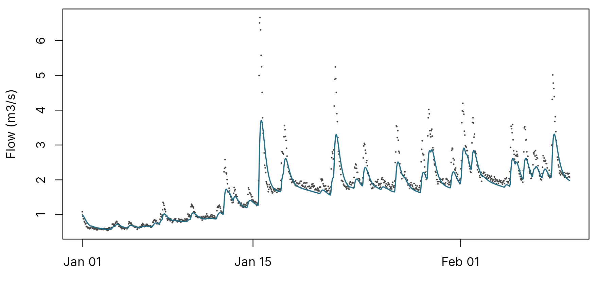
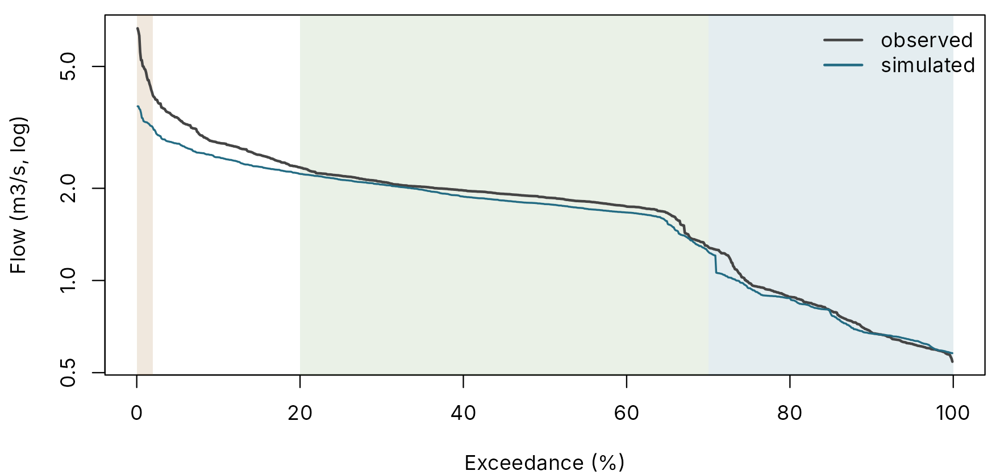
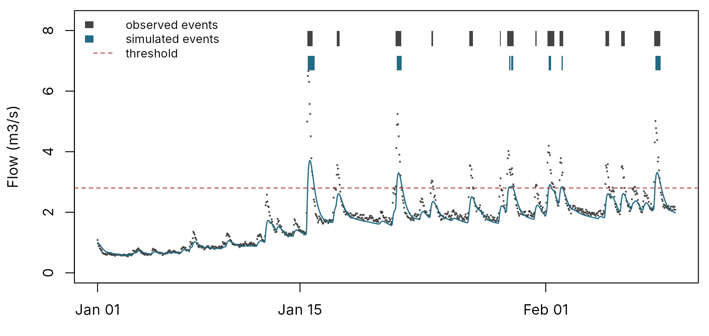
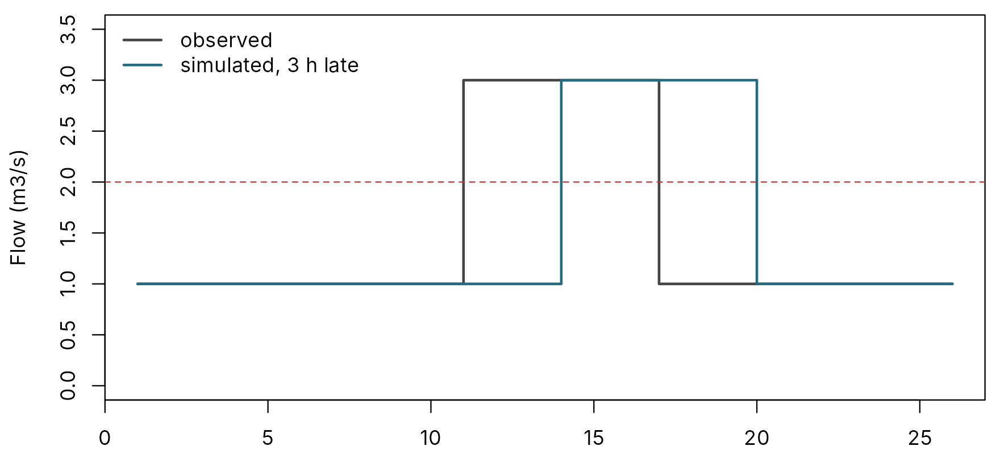
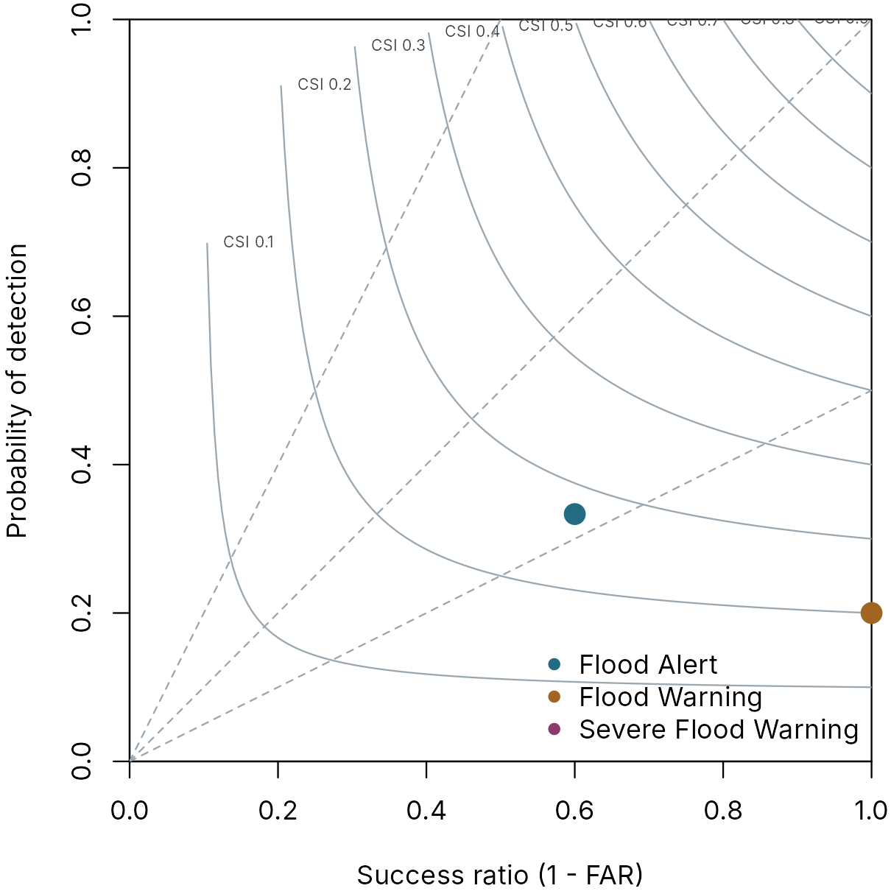

Scoring a simulation: from NSE to POD, FAR and CSI
pdmS7 documentation
Source:vignettes/scoring.Rmd
scoring.RmdA score turns a comparison of two hydrographs into a number. Different numbers answer different questions: is the water balance right, are the floods the right size, are low flows right, did the model cross the warning threshold when the river did? No single score answers all of them, which is why pdmS7 computes a whole scorecard for every run.
This article explains each score, with pictures. Two functions
compute them: pdm_scorecard() for the continuous scores and
pdm_threshold_scores() for threshold crossings. In a
calibration project both are computed for every run, under the scorecard
fixed when the data were registered.
An example hydrograph
The examples use one “observed” series and a simulation with typical faults: a little too dry, peaks a little late and too low.
set.seed(8)
n <- 24 * 40
time <- seq(as.POSIXct("2024-01-01", tz = "UTC"), by = 3600, length.out = n)
forcing <- data.frame(time = time, pet = 0.04,
rain = ifelse(stats::runif(n) < 0.08, stats::rgamma(n, 0.7, scale = 4), 0))
truth <- pdm_presets("standard")
truth$area_km2 <- 50
truth$recharge$kg <- 300
truth$distribution$cmax <- 120
run <- function(config) {
model <- pdm_from_config(config)
run_pdm(model, forcing, initial_state_from_flow(model, 1, 0.6))$output$q_m3s
}
observed <- run(truth) * exp(stats::rnorm(n, 0, 0.03))
faulty <- truth
faulty$fc <- 0.92
faulty$surface$k1 <- 4
faulty$surface$k2 <- 7
simulated <- run(faulty)
par(mar = c(3, 4.2, 0.6, 0.6))
plot(time, observed, pch = 16, cex = 0.3, col = pal[5], xlab = "", ylab = "Flow (m3/s)")
lines(time, simulated, col = pal[1], lwd = 1.5)
Observed (points) and simulated (line) flow.
Continuous scores
round(pdm_scorecard(simulated, observed), 3)
#> nse log_nse kge kge_r
#> 0.813 0.934 0.754 0.928
#> kge_alpha kge_beta rmse log_rmse
#> 0.778 0.922 0.383 0.133
#> volume_error abs_volume_error peak_error fdc_high
#> -0.078 0.078 -0.443 -0.325
#> fdc_mid fdc_low
#> -0.020 0.234| Score | Question it answers | Perfect |
|---|---|---|
nse |
How much of the variance of flow does the model explain? Dominated by high flows | 1 |
log_nse |
The same on log flows, so low flows count as much as floods | 1 |
kge |
Overall fit, combining correlation, variability and bias | 1 |
kge_r |
Does the timing match? | 1 |
kge_alpha |
Is the variability right? Below 1, the model is too flat | 1 |
kge_beta |
Is the mean right? Below 1, too dry | 1 |
rmse, log_rmse
|
Typical error, in m3/s and on log flows | 0 |
volume_error |
Total volume, signed: negative is too dry | 0 |
peak_error |
Highest flow, signed | 0 |
fdc_high, fdc_mid,
fdc_low
|
Flow-duration curve: floods, the mid range and low flows | 0 |
The signed scores matter most to a hydrologist calibrating by hand,
because they say which way to move. Here the volume error is negative,
so the model is too dry, which points to the rainfall factor. The
variability ratio kge_alpha is below 1 and
peak_error and fdc_high are strongly negative:
the floods are too small and too smooth, which points to the surface
stores being too slow. The correlation kge_r stays high,
because the timing is only a little out.
The flow-duration curve signatures
A flow-duration curve sorts flows from highest to lowest, ignoring timing. It shows whether the model has the right regime, even when it has the timing wrong. Yilmaz et al. (2008) summarise it in three numbers.
p <- seq_len(n) / (n + 1) * 100
par(mar = c(4, 4.2, 0.6, 0.6))
plot(p, sort(observed, decreasing = TRUE), type = "n", log = "y", xlab = "Exceedance (%)",
ylab = "Flow (m3/s, log)")
rect(0, 1e-6, 2, 1e6, col = grDevices::adjustcolor(pal[2], 0.15), border = NA)
rect(20, 1e-6, 70, 1e6, col = grDevices::adjustcolor(pal[3], 0.12), border = NA)
rect(70, 1e-6, 100, 1e6, col = grDevices::adjustcolor(pal[1], 0.12), border = NA)
lines(p, sort(observed, decreasing = TRUE), lwd = 2, col = pal[5])
lines(p, sort(simulated, decreasing = TRUE), lwd = 1.5, col = pal[1])
legend("topright", c("observed", "simulated"), col = c(pal[5], pal[1]), lwd = 2, bty = "n")
Flow-duration curves. The three shaded bands are the segments behind fdc_high (top 2 per cent of flows), fdc_mid (slope between 20 and 70 per cent) and fdc_low (the lowest 30 per cent).
-
fdc_high: volume error of the highest 2 per cent of flows. Negative means floods too small. -
fdc_mid: error in the slope of the curve between 20 and 70 per cent. Negative means the response is too sluggish. -
fdc_low: error in the shape of the lowest 30 per cent, which reflects baseflow and the groundwater store.
Threshold crossings
Warning services do not care about variance; they care whether the river crossed the Flood Alert or Flood Warning threshold, and when. For that, every threshold gets a contingency table.
| River above threshold | River below | |
|---|---|---|
| Model above | hit | false alarm |
| Model below | miss | correct negative |
From the table come four scores:
- POD, probability of detection = hits / (hits + misses). Of the floods that happened, how many did the model catch?
- FAR, false alarm ratio = false alarms / (hits + false alarms). Of the floods the model produced, how many did not happen?
- CSI, critical success index = hits / (hits + misses + false alarms). One number for both failures, ignoring the many quiet periods that make other scores look good.
- Frequency bias = (hits + false alarms) / (hits + misses). Above 1, the model crosses too often; below 1, too rarely.
What counts as one flood
Counting every time step would make one long flood worth a hundred hits, and a crossing one hour late a miss and a false alarm. So pdmS7 counts events: an event is an episode above the threshold; exceedances closer together than a minimum gap are one event; and a simulated crossing within a timing tolerance of an observed one is a hit.
threshold <- 2.8
first <- function(x) {
ev <- rle(x > threshold)
ends <- cumsum(ev$lengths)
starts <- ends - ev$lengths + 1
data.frame(start = starts[ev$values], end = ends[ev$values])
}
obs_ev <- first(observed)
sim_ev <- first(simulated)
par(mar = c(3, 4.2, 0.6, 0.6))
plot(time, observed, pch = 16, cex = 0.3, col = pal[5], xlab = "", ylab = "Flow (m3/s)",
ylim = c(0, max(observed) * 1.25))
lines(time, simulated, col = pal[1], lwd = 1.3)
abline(h = threshold, lty = 2, col = pal[6])
top <- max(observed) * 1.2
low <- max(observed) * 1.1
rect(time[obs_ev$start], low + 0.02 * top, time[obs_ev$end], top, col = pal[5], border = NA)
rect(time[sim_ev$start], low - 0.08 * top, time[sim_ev$end], low - 0.02 * top, col = pal[1],
border = NA)
legend("topleft", c("observed events", "simulated events", "threshold"), bty = "n",
fill = c(pal[5], pal[1], NA), border = NA, lty = c(NA, NA, 2), col = c(NA, NA, pal[6]),
cex = 0.8)
Events at a threshold of 2.8 m3/s. Bars show observed (top row) and simulated (bottom row) episodes above the threshold. A simulated bar starting within six hours of an observed one is a hit.
scores <- pdm_threshold_scores(simulated, observed, c(alert = 2.8), tolerance_h = 6,
gap_h = 24)
scores[, .(observed_events, simulated_events, hits, misses, false_alarms, pod, far, csi,
bias = round(bias, 2))]
#> observed_events simulated_events hits misses false_alarms pod far
#> <num> <num> <num> <num> <num> <num> <num>
#> 1: 9 5 3 6 2 0.3333333 0.4
#> csi bias
#> <num> <num>
#> 1: 0.2727273 0.56The three settings are part of the scorecard and are recorded with it:
| Setting | Default | Meaning |
|---|---|---|
tolerance_h |
6 | A simulated crossing within this many hours of the observed one is a hit |
gap_h |
24 | Exceedances closer than this are one event |
min_duration_h |
0 | Shorter episodes are ignored as blips |
Tighten the tolerance for a flashy catchment and widen it for a large slow river.
Timing and size of each hit
For every hit, the scores also report what a forecaster asks next:
scores[, .(crossing_error_h, abs_crossing_error_h, peak_timing_error_h,
peak_error = round(peak_error, 3), duration_error_h,
volume_error = round(volume_error, 3))]
#> crossing_error_h abs_crossing_error_h peak_timing_error_h peak_error
#> <num> <num> <num> <num>
#> 1: 2.666667 2.666667 2.333333 -0.384
#> duration_error_h volume_error
#> <num> <num>
#> 1: -1 -0.722Timing errors are simulated minus observed, so positive means late. A positive crossing error is a warning issued after the river had already risen.
Events against steps
The same table can be counted step by step. Step scores add those that need correct negatives (probability of false detection, equitable threat score, Peirce skill score), but they weigh a long flood more than a short one and punish small timing errors twice.
flood_obs <- c(rep(1, 10), rep(3, 6), rep(1, 10))
flood_sim <- c(rep(1, 13), rep(3, 6), rep(1, 7))
par(mar = c(3, 4.2, 0.6, 0.6))
plot(flood_obs, type = "s", lwd = 2, col = pal[5], ylim = c(0, 3.5), xlab = "Hour",
ylab = "Flow (m3/s)")
lines(flood_sim, type = "s", lwd = 2, col = pal[1])
abline(h = 2, lty = 2, col = pal[6])
legend("topleft", c("observed", "simulated, 3 h late"), col = c(pal[5], pal[1]), lwd = 2,
bty = "n")
The same flood simulated three hours late. By events it is one hit; by steps it is three misses and three false alarms.
late <- pdm_threshold_scores(flood_sim, flood_obs, c(t = 2), tolerance_h = 6)
late[, .(hits, misses, false_alarms, csi, csi_step, pod_step, far_step)]
#> hits misses false_alarms csi csi_step pod_step far_step
#> <num> <num> <num> <num> <num> <num> <num>
#> 1: 1 0 0 1 0.3333333 0.5 0.5Report both, but judge a warning service by events: that is how it is judged.
Several thresholds at once
Thresholds are given as a named vector, so Flood Alert and Flood Warning are scored together.
levels <- c(`Flood Alert` = 2.8, `Flood Warning` = 3.7, `Severe Flood Warning` = 4.8)
multi <- pdm_threshold_scores(simulated, observed, levels, tolerance_h = 6, gap_h = 24)
multi[, .(threshold, flow_m3s, observed_events, hits, misses, false_alarms, pod, far,
csi = round(csi, 2))]
#> threshold flow_m3s observed_events hits misses false_alarms
#> <char> <num> <num> <num> <num> <num>
#> 1: Flood Alert 2.8 9 3 6 2
#> 2: Flood Warning 3.7 5 1 4 0
#> 3: Severe Flood Warning 4.8 3 0 3 0
#> pod far csi
#> <num> <num> <num>
#> 1: 0.3333333 0.4 0.27
#> 2: 0.2000000 0.0 0.20
#> 3: 0.0000000 NA 0.00The misses grow with the threshold, as the low, late peaks suggested. The model never reaches Severe Flood Warning at all, so it has no simulated events there: POD is 0 and FAR is undefined, which is why that threshold has no point on the diagram below.
In a calibration project, thresholds may be given as river levels instead, and are converted to flows through a rating table registered with the data; a level outside the rating is refused rather than extrapolated. See Logging a manual calibration.
The performance diagram
Roebber (2009) puts POD, FAR, CSI and bias on one chart. Success ratio (1 − FAR) runs along the bottom and POD up the side; curves are lines of equal CSI and dashed lines equal bias. The ideal is the top right corner.
par(mar = c(4, 4, 0.6, 0.6))
plot(NA, xlim = c(0, 1), ylim = c(0, 1), xaxs = "i", yaxs = "i",
xlab = "Success ratio (1 - FAR)", ylab = "Probability of detection")
sr <- seq(0.01, 1, length.out = 200)
for (csi in seq(0.1, 0.9, 0.1)) {
pod <- 1 / (1 / csi + 1 - 1 / sr)
pod[pod <= 0 | pod > 1] <- NA
lines(sr, pod, col = pal[7])
k <- which(!is.na(pod))[1]
text(sr[k], pod[k], paste("CSI", csi), cex = 0.6, pos = 4, col = pal[5])
}
for (b in c(0.5, 1, 2)) lines(c(0, 1), c(0, b), lty = 2, col = pal[7])
points(1 - multi$far, multi$pod, pch = 16, cex = 1.8, col = pal[c(1, 2, 4)], xpd = NA)
legend("bottomright", multi$threshold, pch = 16, col = pal[c(1, 2, 4)], bty = "n")
Performance diagram for the three thresholds.
A point below the bias-1 line crosses too rarely (misses); above it, too often (false alarms). The calibration report draws this diagram for every project with thresholds.
Using scores in calibration
-
Headline. At registration, one score ranks runs:
NSE by default, or a threshold score written as
metric:threshold, such ascsi:Flood Warning. - Objective. Automatic calibration minimises a continuous score, optionally with a weighted threshold term. See Automatic calibration.
- Judgement. The verdict on a manual trial stays the hydrologist’s. A trial can lower the headline and still be better, for example when it fixes the water balance.
References
- Gupta, H. V., Kling, H., Yilmaz, K. K. and Martinez, G. F. (2009). Decomposition of the mean squared error and NSE performance criteria. Journal of Hydrology, 377, 80-91.
- Jolliffe, I. T. and Stephenson, D. B. (2012). Forecast Verification: A Practitioner’s Guide in Atmospheric Science, 2nd edition. Wiley.
- Roebber, P. J. (2009). Visualizing multiple measures of forecast quality. Weather and Forecasting, 24, 601-608.
- Yilmaz, K. K., Gupta, H. V. and Wagener, T. (2008). A process-based diagnostic approach to model evaluation. Water Resources Research, 44, W09417.